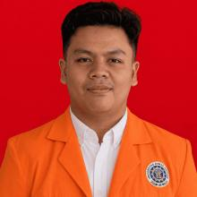

Proyek akademik
Snake Game
Membangun game Snake sederhana dengan menerapkan konsep dasar pemrograman berorientasi objek.

Cyber Security Digital Forensics
Saya mempelajari cara kerja sistem digital dan menelusuri jejak yang ditinggalkannya. Tertarik pada investigasi digital, analisis artefak, dan keamanan jaringan.
Melihat masalah sebagai rangkaian bukti: dikumpulkan dengan cermat, dianalisis secara sistematis, lalu dijelaskan dengan jelas.
Mahasiswa Informatika Universitas Ahmad Dahlan dengan minat pada Digital Forensik. Memiliki pemahaman dasar tentang proses investigasi digital, analisis artefak, serta pengumpulan dan pemeriksaan bukti digital.
Terbiasa menggunakan Autopsy, FTK Imager, dan Wireshark dalam praktikum dan pembelajaran. Memahami dasar analisis sistem dan jaringan, serta tertarik menyelidiki kasus terkait keamanan dan bukti digital.
Mengutamakan ketelitian, pemikiran analitis, dan pemecahan masalah yang terstruktur sambil terus mengembangkan kompetensi.
Proyek akademik yang mempertemukan logika pemrograman, rancangan antarmuka, dan kebutuhan pengguna.
Membangun game Snake sederhana dengan menerapkan konsep dasar pemrograman berorientasi objek.
Merancang antarmuka dan pengalaman pengguna untuk website perpustakaan yang mudah digunakan dan responsif.
Merancang tampilan dan pengalaman pengguna, serta membuat wireframe untuk website petshop yang menarik dan responsif.
Pengalaman organisasi dan kepanitiaan yang membangun koordinasi, tanggung jawab, serta perhatian pada kelancaran acara.
Berperan dalam koordinasi tim, pelaksanaan program, dan menjaga kegiatan berjalan tertib.
Mengoordinasikan anggota dan pelaksanaan program kerja departemen, serta berkoordinasi dengan pengurus dalam perencanaan dan pelaksanaan kegiatan.
Mengkondisikan ketertiban untuk mendukung keberlangsungan acara.
Membantu menjaga ketertiban dan kelancaran kegiatan selama acara berlangsung.
Pendidikan formal dan rangkaian seminar serta pelatihan yang tercantum di CV.
Universitas Ahmad Dahlan
Terbuka untuk diskusi, kolaborasi, dan kesempatan belajar di bidang keamanan siber.